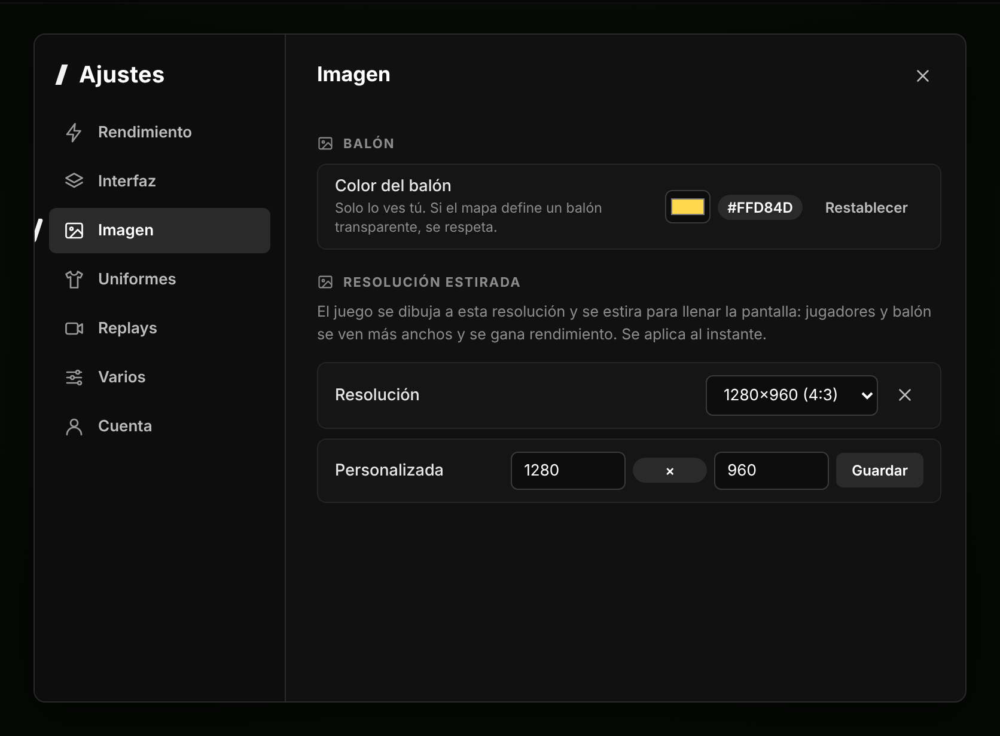
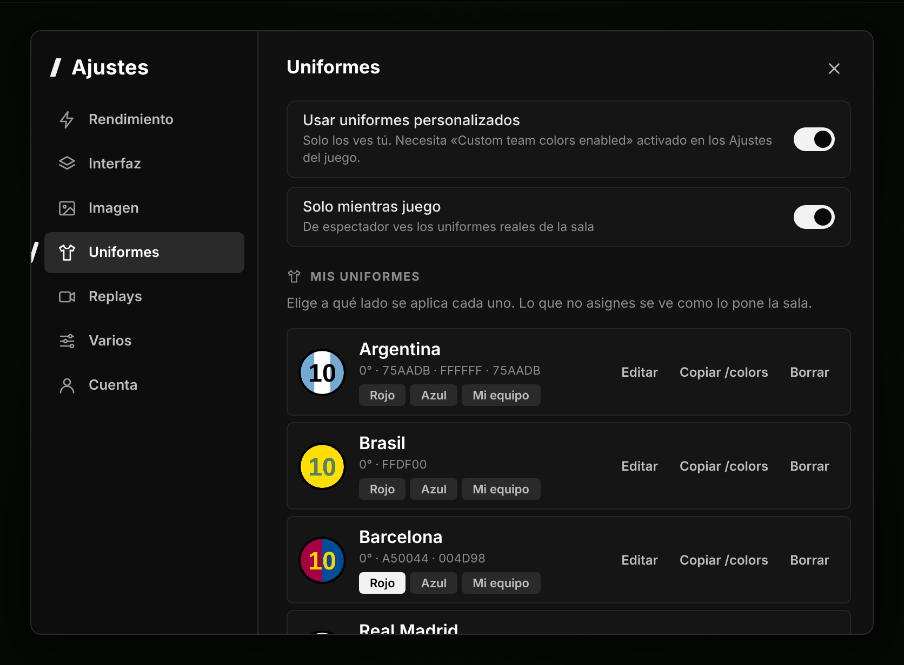
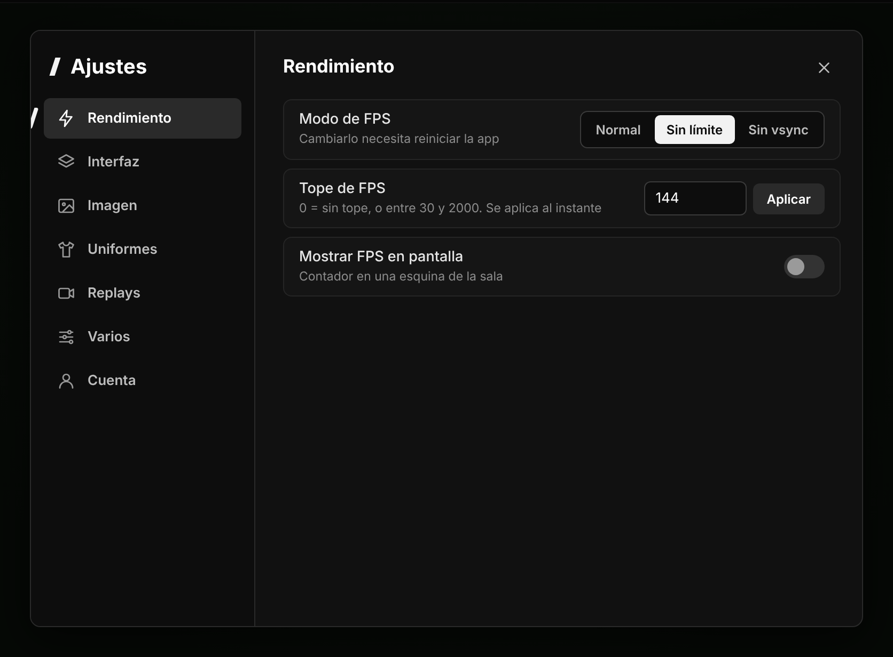

FPS desbloqueados
FPS desbloqueados con un medidor integrado. Escribe /fps para ver los tuyos.
Más fluidez, tu propia imagen, uniformes, replays automáticos y actualizaciones con un clic.

Todo se configura desde el engranaje de la barra superior del cliente.
FPS desbloqueados con un medidor integrado. Escribe /fps para ver los tuyos.
Elige el color que mejor veas. Solo lo ves tú.
4:3, 5:4 o la que escribas, como en los shooters competitivos.
Personalizados, con vista previa, biblioteca y asignación por equipo. Más selecciones y clubes de ejemplo con un clic. Solo los ves tú.
Avatares animados en tus partidas.
Ver detalle →Se graban las partidas en las que juegas. Los archivos .hbr2 se abren con doble clic en Rally.
Tus goles, asistencias y horas jugadas, contados solos en tus partidas.
Ver detalle →Vuelve a tu última sala en un clic, marca favoritas y filtra la lista.
Ver detalle →Tu perfil muestra en qué sala juegas, el marcador y un botón para unirse. Cada dato se apaga por separado.
Ver detalle →Copia tu identidad de HaxBall y guarda un respaldo de tu nick, teclas y ajustes.
Ver detalle →Lista de salas, sala y ajustes con un mismo diseño, claro de leer y ligero.
Rally avisa de cada versión nueva, se descarga e instala sola y te enseña lo que cambió.
Ver novedades →Español · English · Português Panel translúcido Opacidad y tamaño de letra del chat Medidor de ping, jitter y pérdida
Cómo funciona cada parte y qué opciones tiene.
Tus goles, asistencias y tiempo jugado, contados por Rally en las partidas en las que juegas y guardados en tu PC.
Lista de salas → «Tus estadísticas» · /stats/stats reset confirmar borra todos los totales.Rally graba tus partidas solo y abre cualquier .hbr2 con doble clic.
Ajustes → Replays/autorec on y /autorec off.2026-11-14_21h05_MiSala_3-2.hbr2.La lista de salas, pensada para encontrar y volver rápido.
Barra lateral de la lista de salasTu perfil de Discord muestra lo que haces en Rally. Cada dato se puede apagar y se aplica al momento, sin reiniciar.
Ajustes → Varios → DiscordTu identidad en HaxBall y una copia de seguridad para no perderla.
Ajustes → Cuentaidkey.…) y Rally la aplica y se recarga. Si no es válida, te lo avisa.Se escriben en el chat de una sala y los resuelve Rally en tu PC: no se envían a la sala.
Chat de la sala/fps/fps 144; /fps 0 lo quita (0 o entre 30 y 2000)./fpsmode off | unlock | novsync/relaunch./gif 1 2 3/gif solo lo apaga o lo reanuda. Solo dentro de una sala./stats/stats reset confirmar lo borra./autorec on | off/glass/net/relaunch!bb!bb; «!bb gg» va como chat normal. Si estabas grabando, guarda el replay antes.Así se ve el cliente por dentro.





Lo mismo que Rally te muestra al abrir tras actualizar.
Cargando…
Para Windows 10 y 11, 64 o 32 bits. No hace falta ser administrador.
¿Otra versión? Ver todas las Releases
Es el archivo Rally-Setup-<versión>.exe.
Elige la carpeta si quieres y termina la instalación. Se abre solo al acabar.
La guía de bienvenida te enseña lo básico. Puedes releerla en Ajustes → Varios.
Como el instalador aún no está firmado digitalmente, Windows puede mostrar «Windows protegió su PC». Pulsa Más información → Ejecutar de todas formas.
En Releases verás otros archivos (.blockmap, latest.yml, latest.json): los usa Rally para actualizarse. Tú solo necesitas el .exe, y solo desde este repositorio.
Rally es un proyecto independiente. No está afiliado ni respaldado por HaxBall ni por su autor.
%APPDATA%\RallyClient\Replays y %APPDATA%\RallyClient\Stadiums. Ajustes → Replays tiene un botón para abrir la carpeta.